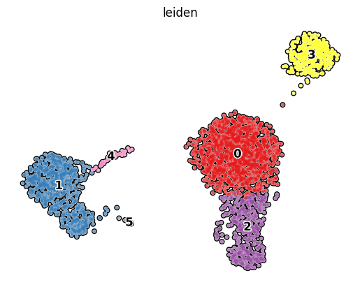
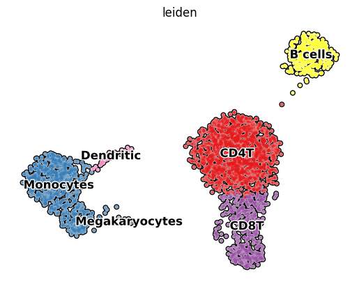
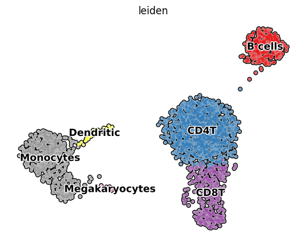

단일세포 RNA 시퀀싱(scRNA-seq) 데이터 분석의 양대 산맥인 Scanpy와 Seurat은 서로 다른 파일 형식으로 데이터를 저장합니다. 더구나 프로그래밍 언어도 다르다 보니, 서로 데이터 변환이 쉽지 않습니다.
그래서 이미 데이터 변환을 위한 여러가지 도구(sceasy 등)들이 개발되어 왔지만 제대로 작동 하지 않는 경우가 너무 많아서 이 글을 쓰게 되었습니다.
AnnData 객체에 대하여
Scanpy는 고차원 단일세포 RNA 시퀀싱 데이터를 다루기 위한 파이썬 라이브러리입니다. 이 라이브러리는 데이터를 저장하고 관리하기 위해 AnnData 객체를 활용합니다. 이번 포스트는 Scanpy를 사용하여 10x Genomics 에서 제공하는 텍스트 형식의 데이터를 먼저 불러오고 UMAP을 그린다음 다시 텍스트 형식의 데이터로 내보내는 작업을 해보겠습니다. 이런 방법을 알게 되면 Seurat으로 데이터를 변환하는 작업도 훨씬 쉬워집니다.
mtx 형식에 대하여
scRNA-seq count 데이터는 희소 행렬입니다. 다시 말해 대부분의 데이터가 0인 형태입니다. 이런 형태의 데이터를 효율적으로 저장하기 위해서 우리는 MEX(Market Exchange Format)을 사용합니다.
MEX 형식은 행렬 데이터의 교환을 쉽게 할 수 있도록 고안되었습니다. 가능한 쉽게 분석할 수 있도록 최소한의 ASCII 형식을 가진 파일로 구성 됩니다.
공개된 scRNA-seq 데이터에서 mtx로 저장되어 있는 것을 많이 볼 수 있습니다. 간략하게 설명하자면 matrix.mtx파일은 생성된 유전자 x 세포 count 행렬을 나타내며, 각 유전자의 발현 수준을 담고 있습니다.
추가로 각 행과 열 인덱스에 해당하는 유전자 및 바코드 시퀀스가 TSV(Tab separated values) 형식 파일로 포함됩니다. TSV파일은 가장 단순하고 범용적인 파일 형식으로, 각 유전자의 이름과 세포 데이터가 텝으로 구분되어 저장되어 있습니다.
예시 데이터
10x Genomics에서 무료로 제공하는 pbmc3k 데이터를 사용합니다. 직접 다운로드하거나 아래 코드를 통해 터미널에서 작업할 수 있습니다.
Cell Ranger 버전 3.0 이후에는 파일 형식이 달라졌습니다. genes.csv 파일은 features.tsv.gz로 대체되었으며, mtx 파일 및 바코드 파일은 이제 gzip으로 압축되었습니다.
mtx to AnnData
import warningsimport anndataimport pandas as pdimport scanpy as scimport scipyfrom scipy.io import mmread# 경고 무시warnings.simplefilter("ignore")# 출력 세부 수준 설정sc.settings.verbosity =0# 오류 (0), 경고 (1), 정보 (2), 힌트 (3)# 입력 경로input_path ="../input/filtered_gene_bc_matrices/hg19/"# 데이터 읽기adata = sc.read_10x_mtx( input_path, # `.mtx` 파일이 있는 디렉토리 var_names="gene_symbols", # 변수 이름에 유전자 기호 사용 (변수 축 인덱스))# `sc.read_10x_mtx`에서 `var_names='gene_ids'`를 사용하는 경우 이 작업이 필요하지 않음adata.var_names_make_unique()adata
위 출력 결과를 통해 원시 데이터에 총 2,700개의 바코드와 32,738개의 유전자가 있다는 것을 알 수 있습니다.
기본적인 데이터 QC 하기
# 기본 필터링: 최소 유전자가 200개 이상인 세포 필터링sc.pp.filter_cells(adata, min_genes=200)# 최소 3개 이상의 세포에서 발현되는 유전자 필터링sc.pp.filter_genes(adata, min_cells=3)# 미토콘드리아 유전자 그룹을 "mt"로 주석adata.var["mt"] = adata.var_names.str.startswith("MT-")# QC 지표 계산sc.pp.calculate_qc_metrics(adata, qc_vars=["mt"], percent_top=None, log1p=False, inplace=True)# 유전자 별 발현 수가 2500개 미만인 데이터 선택adata = adata[adata.obs.n_genes_by_counts <2500, :]# 미토콘드리아 발현 비율이 5% 미만인 데이터 선택 후 복사adata = adata[adata.obs.pct_counts_mt <5, :].copy()adata
위 결과를 통해 데이터 QC를 거치자 데이터가 조금 감소한 것(바코드 2,638개, 유전자 13,714개)을 알 수 있습니다.
데이터 정규화하기
UMAP을 그리기 위해 원시 데이터를 정규화하고 highly variable 유전자만 남긴 다음 클러스터링을 수행합니다. 계산량을 줄이기 위해 전체 유전자중 일부 highly variable 유전자만으로 진행합니다.
Note
전체 유전자를 다 사용한 것과 클러스터링 결과는 동일합니다.
# 총 카운트 정규화sc.pp.normalize_total(adata, target_sum=1e4)# 데이터 로그 스케일 변환sc.pp.log1p(adata)# 고변동성 유전자 식별sc.pp.highly_variable_genes(adata, min_mean=0.0125, max_mean=3, min_disp=0.5)# 나중에 사용하기 위해 AnnData 객체의 .raw 속성을 정규화되고 로그 스케일링된 원시 유전자 발현으로 설정adata.raw = adata# 필터링 실행adata = adata[:, adata.var.highly_variable]# 각 세포의 총 카운트 및 발현된 미토콘드리아 유전자의 백분율 효과를 회귀로 제거하고 데이터를 단위 분산으로 스케일링sc.pp.regress_out(adata, ["total_counts", "pct_counts_mt"])# 각 유전자를 단위 분산으로 스케일링하고 표준 편차가 10을 초과하는 값을 클리핑sc.pp.scale(adata, max_value=10)# PCA 수행sc.tl.pca(adata, svd_solver="arpack")# 이웃 찾기sc.pp.neighbors(adata, n_neighbors=10, n_pcs=40)# UMAP 수행sc.tl.umap(adata)# Leiden 알고리즘을 사용하여 클러스터링 수행sc.tl.leiden( adata, resolution=0.4, random_state=42,)# 처리된 데이터셋 반환adata
# UMAP 시각화sc.pl.umap( adata, color="leiden", # 클러스터링 결과에 따라 색상 지정 add_outline=True, # 클러스터 경계 추가 legend_loc="on data", # 범례 위치 설정 legend_fontsize=12, # 범례 글꼴 크기 설정 legend_fontoutline=2, # 범례 글꼴 외곽선 굵기 설정 frameon=False, # 테두리 제거 palette="Set1", # 색상 팔레트 설정)

이 데이터셋은 이미 많이 알려진 것이라. 클러스터에 대한 마커 유전자를 찾고 어떤 세포인지 알아내는 과정은 생략하겠습니다.
아래와 같이 수동으로 이름을 지정해줍니다. 숫자로 표시되는 각각의 클러스터에 대하여 아래 코드를 통해 이름을 붙여줍니다.
new_cluster_names = ["CD4T", # CD4T 세포"Monocytes", # 단핵구"CD8T", # CD8T 세포"B cells", # B 세포"Dendritic", # 수상돌기세포"Megakaryocytes", # 거대혈소판세포]adata.rename_categories("leiden", new_cluster_names)# 클러스터링된 세포의 UMAP 다시 시각화sc.pl.umap( adata, color="leiden", # 클러스터링 결과에 따라 색상 지정 add_outline=True, # 클러스터 경계 추가 legend_loc="on data", # 범례 위치 설정 legend_fontsize=12, # 범례 글꼴 크기 설정 legend_fontoutline=2, # 범례 글꼴 외곽선 굵기 설정 frameon=False, # 테두리 제거 palette="Set1", # 색상 팔레트 설정)

이후 데이터를 다시 읽어왔을때와 동일한지 확인하기 위해 adata 객체에 포함되어 있는 메타데이터의 데이터형을 확인합니다.
AnnData 객체를 저장할때는 H5AD(Hierarchical Data Format 5) 파일을 사용합니다. 이 파일 형식은 대용량 데이터셋의 주요 구성 요소(예: 표현형 데이터, 주석, 메타데이터)를 계층적으로 구조화해서 효율적으로 저장하고 처리할 수 있게 해 줍니다.
# 분석 결과를 저장할 파일 경로output_path ="../output/pbmc3k/"# `compression='gzip'`는 디스크 공간을 절약하지만 쓰기와 이후의 읽기가 약간 느려집니다.adata.write(output_path +"pbmc3k.h5ad", compression="gzip")
H5AD 파일 다시 불러오기
sc.read_h5ad 함수는 H5AD 파일 형식을 AnnData 객체로 직접 불러옵니다.
# 저장했던 h5ad파일을 다시 불러옵니다.adata = sc.read_h5ad(output_path +"pbmc3k.h5ad")adata
# genes.tsv 로 유전자 정보 저장df_genes = adata.var.gene_ids.reset_index()df_genes.set_index("gene_ids").to_csv( output_path +"genes.tsv", sep="\t", index=True, header=False,)# barcodes.tsv 로 저장pd.DataFrame(adata.obs.index).to_csv( output_path +"barcodes.tsv", sep="\t", index=False, header=False,)# UMAP 좌표 저장pd.DataFrame(adata.obsm["X_umap"], index=adata.obs_names).to_csv( output_path +"UMAP.tsv", sep="\t", index=True, header=True,)# 메타 데이터 저장adata.obs.to_csv( output_path +"metadata.tsv", sep="\t", index=True,)# mtx 희소 행렬 저장, Transpose 필요scipy.io.mmwrite(output_path +"matrix.mtx", adata.X.T)
output_path에 파일이 5개 생겼을 것입니다.
다시 mtx to AnnData
다시 10x format 데이터를 읽어서 AnnData객체를 만들어 봅니다. 2가지 방법으로 해보겠습니다. 첫번째는 기존에 read_10x_mtx()함수를 사용하는 방법이고 두번째는 수작업으로 각각의 데이터를 합치는 방법입니다.
read_10x_mtx()함수 사용
만약 다른 분석 도구를 통해 처리된 데이터의 경우라면 그리 추천하지는 않는 방법입니다.
# 데이터 읽기adata = sc.read_10x_mtx( output_path, # `.mtx` 파일이 있는 디렉토리 var_names="gene_symbols", # 변수 이름에 유전자 기호 사용 (변수 축 인덱스))# `sc.read_10x_mtx`에서 `var_names='gene_ids'`를 사용하는 경우 이 작업이 필요하지 않음adata.var_names_make_unique()adata
# UMAP 시각화sc.pl.umap( adata, color="leiden", # 클러스터링 결과에 따라 색상 지정 add_outline=True, # 클러스터 경계 추가 legend_loc="on data", # 범례 위치 설정 legend_fontsize=12, # 범례 글꼴 크기 설정 legend_fontoutline=2, # 범례 글꼴 외곽선 굵기 설정 frameon=False, # 테두리 제거 palette="Set1", # 색상 팔레트 설정)

UMAP이 문제없이 재현되는 것을 확인 할 수 있습니다.
나가며
단일세포 RNA 시퀀싱(scRNA-seq) 분야는 빠르게 발전하고 있지만, 여전히 표준화되지 않은 측면이 많습니다. 이는 여러 이유로 설명될 수 있습니다. 그 중에서도 표준화된 프로토콜을 개발하기가 어렵다는 것이 큰 이유라고 생각합니다.
따라서, 현재는 위에서 살펴본 방법처럼 가장 단순한 mtx으로 되돌리는 방법을 통해 데이터를 변환하는 것이 최선으로 보여집니다.